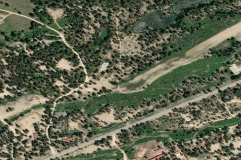

IDAHO CITY USFS
U98 · ID

Aerial imagery source: Esri, Vantor, Earthstar Geographics, and the GIS User Community
| Identifier | U98 |
|---|---|
| State | ID |
| Runway length | 3,400 ft |
| Runway width | 50 ft |
| Surface | TURF-GRVL |
| Runway | 04/22 |
| Elevation | 3,920 ft |
| Ownership | public |
| CTAF | 122.9 |
| Coordinates | 43.82072638, -115.85094277 |
Notes
[idaho_itd] USFS Airfield [shortfield] Location Overview: Idaho City USFS Airport sits about a mile southwest of downtown Idaho City, tucked against old mine tailings on the western edge of town in Idaho's Boise Basin, at an elevation of roughly 3,920 feet. Camping & Recreation: There are no camping facilities directly at the airstrip, but a half-mile trail leads from the runway into town, where hotel and motel accommodations and restaurants are available. Grayback Gulch Campground lies about 2.4 miles southwest of town for those wanting a more traditional camping option. Idaho City itself is a popular stop for backcountry pilots, and some fly in specifically to walk into town for a meal, with the community also hosting events like the Frontier Days Festival that draw visiting pilots. Notes & Warnings: The single runway, 4/22, is 3,400 by 50 feet with a turf/gravel surface in good condition, though the first 900 feet off runway end 4 is turf while the remainder is a dirt/gravel mix. Pilots are advised to land runway 04 and take off runway 22 when wind conditions permit, and the pattern is left traffic for both directions. Obstacles are a real factor: 55-foot trees sit just 20 feet from the runway on the approach, and additional trees and obstructions affect approaches to both runway ends. The field has no winter maintenance and no telephone available, and USFS helicopter operations occur during fire season, so extra vigilance is warranted in summer/fall. There's no fuel available on the field, and it's unattended with no control tower, using CTAF 122.9. Given the trees, gravel/dirt surface, and lack of services, this strip calls for solid mountain/backcountry flying experience. History: Idaho City itself is one of the most storied towns in the American West. It was founded in December 1862 as "Bannock," amid the Boise Basin gold rush during the Civil War — the largest gold rush since California's a dozen years earlier. Its location near the confluence of Elk and Mores Creeks gave it ample water, letting it outgrow nearby camps like Placerville, Pioneerville, and Centerville, and the territorial legislature later renamed it "Idaho City" to avoid confusion with Bannack, Montana. At its 1860s peak, the boomtown had more than 200 businesses, including three dozen saloons and two dozen law offices — for a time it was even the largest city in the Pacific Northwest and Idaho's territorial capital. The airstrip itself dates to an activation date of November 1948 and has long served as a gateway for pilots visiting this old mining town, now a quirky, still-inhabited "ghost town" popular with the backcountry flying community.